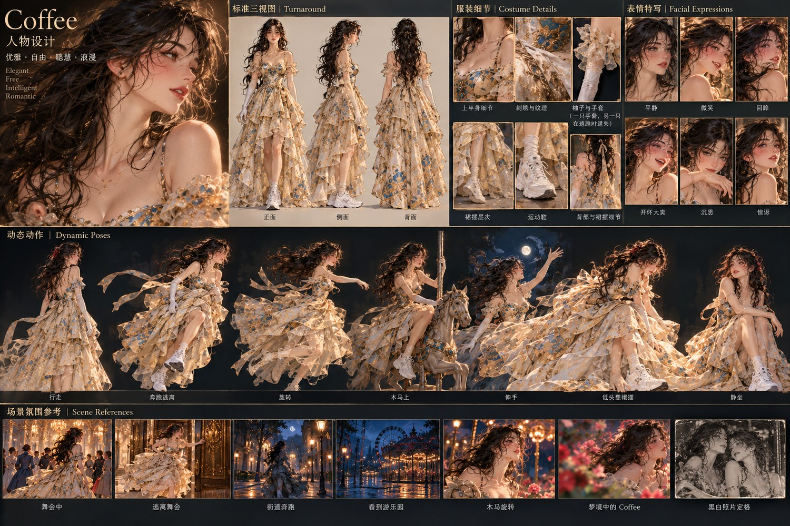
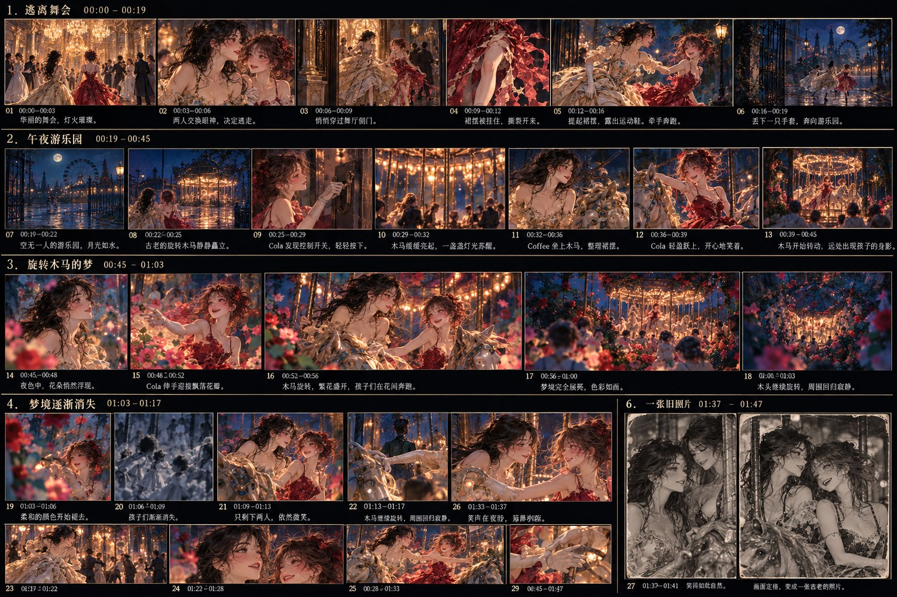
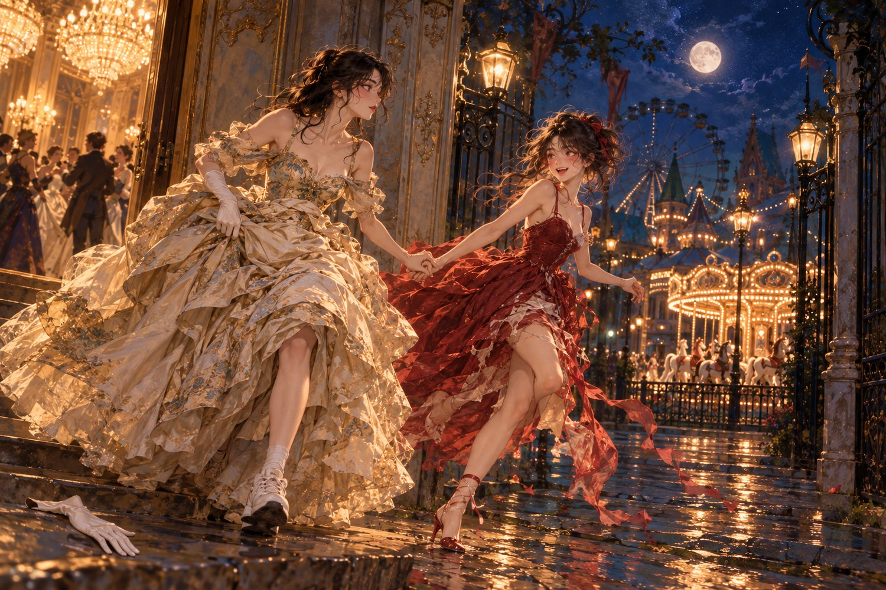
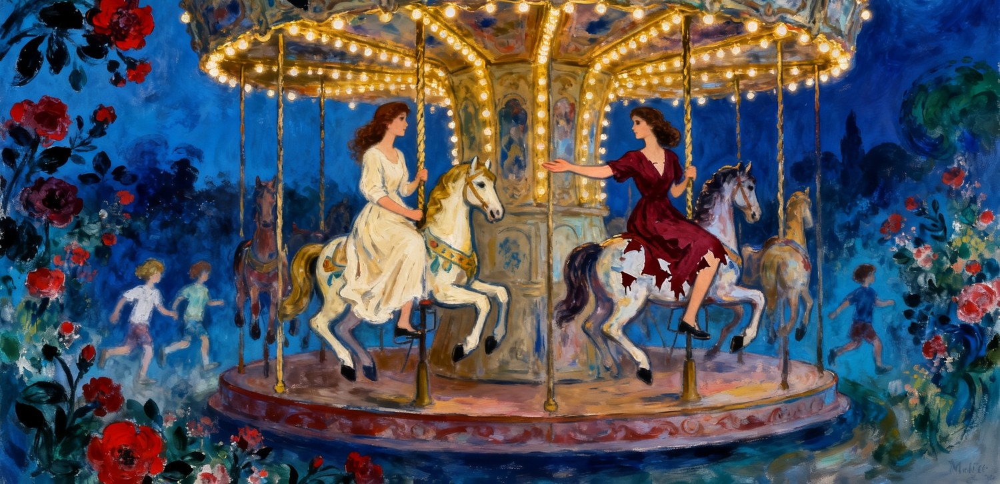
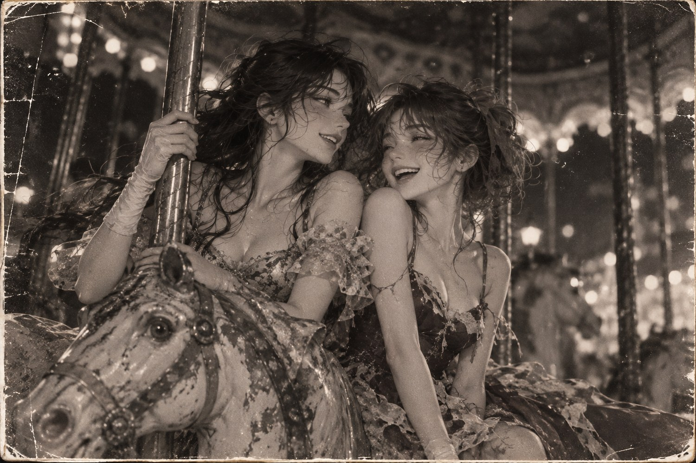

音乐： Sweet Dream of a Sleepless Night
歌曲时长： 约 1分47秒
戏剧序幕： 25秒（无配乐）
MV 总时长： 约 2分12秒
主要人物： Coffee、Cola
艺术风格： 古典浪漫主义 × Pierre Bonnard × Marc Chagall
核心意象： 午夜逃亡、破损的礼服、古老的旋转木马、繁花、孩子、黑白照片。
· · ·
一、故事概要
午夜，一场华丽的舞会正在举行。
Coffee 和 Cola 厌倦了舞会，偷偷溜了出来。
她们穿着雍容华贵的晚礼服，却跑得有些狼狈。Coffee 穿着运动鞋，逃跑时丢了一只手套；Cola 的红色长裙被门上的装饰钩住，撕破了半边。
两个女孩跑出宫殿，发现了一座已经关闭的游乐园。
音乐响起。
她们偷偷闯进游乐园，启动了一座古老的旋转木马。
随着木马旋转，原本黑暗的游乐园逐渐变成梦境。
繁花盛开，孩子们在花园里奔跑，朦胧的红色与绿色浮现在深蓝色夜幕下。
两个女孩沉浸在快乐中。
然而，花朵逐渐褪色，孩子们消失，世界重新回到寂静。
最后，她们相视而笑的瞬间突然定格，变成一张年代久远的黑白照片。
那一夜已经过去，照片里的笑容却依然年轻。
· · ·
二、人物艺术设计
Coffee｜华丽中的随意
延续前两支 MV 的人物面容。
- ✦服装： 象牙白、香槟金色的古典晚礼服，精致刺绣，宽大的裙摆。
- ✦鞋子： 一双白色运动鞋。
- ✦手套： 原本有一双长手套，逃跑时遗失一只。
- ✦发型： 深色长发，原本精致的发型在奔跑中略微散乱。
- ✦饰品： 不戴皇冠，不佩戴珠宝。
- ✦人物动作： 提裙、行走、回眸、优雅地转身。
Coffee 的魅力来自仪态和服装线条。
即使狼狈地逃跑，她依然保持一种自然的优雅。

Cola｜破损礼服中的舞者
同样延续前两支 MV 的人物面容。
- ✦服装： 酒红色的华丽舞会长裙，贴身上衣，轻盈宽大的裙摆。
- ✦服装变化： 逃跑时一侧裙摆被撕破，形成一半长、一半短的不对称舞裙。
- ✦鞋子： 适合舞蹈的红色舞鞋。
- ✦发型： 蓬松的深棕色盘发，带红色发带，奔跑后有些凌乱。
- ✦饰品： 不戴皇冠，不佩戴珠宝。
- ✦人物动作： 奔跑、跳跃、旋转、伸展手臂。
Cola 的魅力来自运动。
她原本完整的晚礼服因为意外破损，反而获得了一种新的舞蹈美感。
· · ·
三、完整分镜脚本

视觉分镜总表：编号为视觉版序号，与下文镜头号并非一一对应。
第一幕：逃离舞会
00:00–00:25｜无电影配乐，环境声
视觉： 香槟金、深红色、华丽的巴洛克舞厅。
这一段采用电影叙事，突出两个女孩的淘气、紧张和快乐。
镜 01 00:00–00:04 · 全景，缓慢横移
华丽的宫廷舞会。水晶吊灯下，盛装的宾客跳舞。Coffee 独自站在舞厅一角。
声｜远处舞会的音乐与交谈声
镜 02 00:04–00:07 · 中近景
Cola 从人群里出现，来到 Coffee 身边。她偷偷使了个眼色，Coffee 会意一笑。
声｜舞会音乐、轻微笑声
镜 03 00:07–00:11 · 中景，跟拍
Cola 拉起 Coffee 的手，两人穿过侧门。Coffee 提起裙摆，露出白色运动鞋。
声｜脚步声逐渐清晰
镜 04 00:11–00:15 · 特写转中景
Cola 的红色长裙被门上的金属装饰钩住。她用力向前跑，裙摆撕开，半边长裙落下。Cola 惊讶地低头看了一眼。
声｜布料撕裂声
镜 05 00:15–00:20 · 中景，移动跟拍
Cola 突然笑起来，顺势转了半圈。破损的裙摆飞扬。她拉着 Coffee 继续奔跑，Coffee 的一只手套滑落。
声｜奔跑声、笑声
镜 06 00:20–00:25 · 远景转中景
两人跑出宫殿，来到安静的街道。Cola 突然停下，指向远方。Coffee 顺着她的目光看去：月光下是一座古老的游乐园。
声｜舞会声消失，只剩微风与喘息

镜头 06 结尾：
两个女孩站在深蓝色夜色中。
远处是已经关闭的游乐园。
一座旋转木马静静地立在那里。
短暂的寂静。
00:25，管弦乐响起。
第二幕：闯入午夜游乐园
00:25–00:44｜管弦乐前奏
音乐时间：00:00–00:19
镜 07 00:25–00:29（音乐 00:00–00:04） · 全景，缓慢推进
月光下的游乐园。铁门关闭，里面空无一人。古老的旋转木马矗立在黑暗中。
镜 08 00:29–00:33（音乐 00:04–00:08） · 中景，跟拍
Cola 找到铁门的缝隙，灵巧地钻进去。Coffee 提着宽大的裙摆，稍显笨拙地跟在后面。
镜 09 00:33–00:37（音乐 00:08–00:12） · 中近景
两人来到旋转木马旁边。Cola 发现控制箱，偷偷向 Coffee 示意。Coffee 摇头，Cola 却顽皮地笑了。
镜 10 00:37–00:40（音乐 00:12–00:15） · 特写
Cola 按下开关。老旧的机器轻轻震动，第一盏小灯亮起。
镜 11 00:40–00:44（音乐 00:15–00:19） · 全景，缓慢环绕
旋转木马开始转动。小灯一盏盏亮起，但光线依然微弱。两个女孩开心地跑向木马。
艺术要求
这里的木马还不是梦幻的。
它应该是一座略显古老的欧洲旋转木马，雕刻精美，但带着岁月的痕迹。
灯泡发出柔和的金色光芒。
整体仍然保持深蓝色夜晚的氛围。
第三幕：木马开始旋转
00:44–01:10｜第一段主歌
音乐时间：00:19–00:45
镜 12 00:44–00:50 · 中景，缓慢跟随
两人各自骑上一匹精致的木马。Coffee 小心地整理裙摆，Cola 开心地抱住木马的立柱。
♫ When the night darken / Dream perfume arouse me
镜 13 00:50–00:57 · 低机位，向上仰拍
木马慢慢旋转。月光透过木马顶部，落在两人的脸上。金色小灯与蓝色夜幕形成鲜明对比。
♫ The beautiful moon in the sky / Pouring down golden ray
镜 14 00:57–01:04 · 中近景，环绕移动
Coffee 和 Cola 随木马一高一低地运动。Cola 回头向 Coffee 招手，Coffee 优雅地微笑。
♫ I taste the sweet of living / With tears becoming old
镜 15 01:04–01:10 · 全景，镜头随木马旋转
木马外围开始出现朦胧的花朵。几个孩子的身影从远处跑过，仿佛梦中的幻影。
♫ When heard the child laughing
关键视觉变化
从镜头 15 开始，现实逐渐发生改变。
原本荒凉的游乐园里，红色花朵慢慢盛开。
绿色的枝叶从黑暗中浮现。
孩子们并不是突然凭空出现，而是随着木马旋转，仿佛从背景的朦胧色彩里渐渐显形。
第四幕：无眠之梦
01:10–01:28｜歌曲情绪高潮
音乐时间：00:45–01:03
镜 16 01:10–01:14 · 全景，环绕
旋转木马周围繁花盛开。深蓝色夜幕下，朦胧的红花与绿叶随音乐轻轻摇曳。
♫ A sleepless dream
镜 17 01:14–01:21 · 中近景，随木马环绕
Coffee 和 Cola 开心地坐在相邻的木马上。Cola 伸出手，Coffee 回应。两人隔着旋转的木马相视而笑。
♫ I prefer not to end
镜 18 01:21–01:28 · 大全景，缓缓升高
整座旋转木马被繁花环绕。孩子们在花间奔跑、追逐。灯光、花朵和孩子的身影形成朦胧、流动的色彩。
♫ As the days too long
梦境主视觉
采用我们已经确定的第二张概念画方向。
视觉关键词：
深蓝色、暗中有光、红绿对比、朦胧、繁花、童年。
不要让木马过于明亮。
不要将游乐园变成热闹的迪士尼乐园。
孩子只作为梦境中的背景人物出现，不需要清晰的面部特写。
所有视觉变化都围绕正在旋转的木马展开。
梦境不是一个完全不同的世界，而是现实世界在旋转中突然变得美丽。

第五幕：梦境逐渐消失
01:28–01:42｜歌曲尾段
音乐时间：01:03–01:17
镜 19 01:28–01:34 · 中景，缓慢横移
镜头掠过盛开的花丛。鲜艳的红色和绿色开始褪去，花朵逐渐变成灰蓝色。
♫ Color becomes gray
镜 20 01:34–01:38 · 全景，缓慢后退
奔跑的孩子逐渐变得透明，最后消失。花园也渐渐隐入黑暗。
♫ The noise becomes silence
镜 21 01:38–01:42 · 中近景
只剩下 Coffee 和 Cola 坐在木马上。她们仍然快乐地笑着，没有注意到周围的梦境已经消失。
♫ And noise becomes pray
情感处理
这里不要让人物露出悲伤的表情。
她们的快乐没有消失。
消失的是梦境。
镜头逐渐从绚丽的色彩回到深蓝色夜晚。
木马仍然缓缓转动。
第六幕：最后的圆舞曲
01:42–02:02｜管弦乐间奏
音乐时间：01:17–01:37
镜 22 01:42–01:49 · 中景，随木马运动
旋转木马恢复了温暖而微弱的灯光。Coffee 和 Cola 仍然坐在木马上，随着圆舞曲旋转。
♫ 管弦乐重新响起
镜 23 01:49–01:56 · 环绕长镜头
镜头跟随木马完成一次优美的环绕。Coffee 的金色长裙、Cola 的红色破裙在夜风中飘动。
♫ 轻快的管弦乐
镜 24 01:56–02:02 · 中近景，缓慢推进
旋转木马逐渐减速。Coffee 和 Cola 越来越靠近，她们转过头，相视而笑。背景变得空旷、寥落。
♫ 音乐逐渐减弱
这里不再出现繁花和孩子。
只有古老的木马、微弱的灯光，以及两个仍然快乐的女孩。
第七幕：一张旧照片
02:02–02:12｜音乐尾声
音乐时间：01:37–01:47
镜 25 02:02–02:07 · 双人面部特写，缓慢推进
Coffee 和 Cola 坐在相邻的木马上，靠得很近。Coffee 优雅地笑着，Cola 笑得灿烂。背景是一座老旧而寥落的旋转木马。
♫ 长笛、钢琴，旋律渐弱
镜 26 02:07–02:12 · 突然定格，随后逐渐褪色
两人笑容达到最自然的一刻，画面突然静止。颜色慢慢消失，变成一张带有银盐颗粒、划痕和磨损边缘的黑白老照片。音乐结束，照片停留在画面中。
♫ 最后的几个音符
最后一镜的特别要求
直接采用我们已经确认的第三张主视觉。
但在视频制作时，必须注意：
彩色画面与黑白照片是同一个镜头。
两个人的姿态、面部表情、木马位置都不改变。
只让时间突然静止，再让照片逐渐老去。
不要另切一张不同构图的照片。
最后没有字幕，没有解释，也没有醒来的镜头。
就停留在这张黑白照片上。

· · ·
四、音乐与视觉时间总表
第一幕 00:00–00:25 · 逃离舞会
歌曲 无配乐｜金色、红色，轻快戏剧
第二幕 00:25–00:44 · 进入游乐园，启动木马
歌曲 00:00–00:19｜深蓝、微弱金光
第三幕 00:44–01:10 · 木马旋转，梦境萌芽
歌曲 00:19–00:45｜蓝色、红绿初现
第四幕 01:10–01:28 · 繁花盛开，孩子奔跑
歌曲 00:45–01:03｜蓝色、鲜艳红绿
第五幕 01:28–01:42 · 花朵褪色，孩子消失
歌曲 01:03–01:17｜灰蓝色、低饱和度
第六幕 01:42–02:02 · 最后的圆舞曲
歌曲 01:17–01:37｜深蓝、柔和金光
第七幕 02:02–02:12 · 笑容定格，旧照片
歌曲 01:37–01:47｜黑白银盐摄影
注：歌词时间为当前分镜采用的估计值，正式剪辑时应进一步按实际音频对齐。
· · ·
五、摄影与视觉语言
整支 MV 使用三种不同的影像语言。
1. 逃跑：真实的电影感
开头采用较自然的摄影。
镜头可以轻微晃动，体现奔跑的紧张与快乐。
不需要强调舞蹈。
人物的笑声、脚步声、衣服的摩擦和撕裂声，都是这段戏的重要组成部分。
2. 木马：流动的印象派油画
音乐开始后，摄影机逐渐变得平稳。
采用大量跟随木马旋转的运镜。
画面应该具有博纳尔油画中的色彩感和夏加尔作品中的梦幻气质。
但人物始终保持清晰、稳定、可辨认。
3. 结尾：静止的旧照片
从不断旋转的运动，突然进入完全静止的画面。
从浓郁绚丽的颜色，最终变成黑白。
从音乐与笑声，最后归于寂静。
这是整支 MV 最重要的形式变化。
· · ·
六、制作中的关键连续性
人物： Coffee 和 Cola 的面容、发型及体态以之前提供的角色定妆图为标准。
服装： Coffee 从逃跑开始就穿运动鞋。Cola 的裙子在序幕撕裂后，所有后续镜头均保持相同的不对称破损形态。
旋转木马： 现实、梦境和最后照片中的木马必须是同一座。梦境改变它的灯光和周围环境，不改变主体结构。
空间： 孩子和鲜花只存在于梦境中。前奏与尾声的现实游乐园应当空无一人。
情感： 两人始终保持自然的快乐。不要安排流泪、悲伤、感伤地回头等动作。
· · ·
七、导演意图
我希望《Sleepless Dream》看起来首先是一段轻快、淘气、充满生命力的午夜冒险。
两个女孩穿着漂亮的礼服，却狼狈地逃出舞会。
她们在一座无人游乐园中偷偷骑上旋转木马。
随着音乐，世界变得越来越美丽。
孩子们奔跑，繁花盛开。
但一切最终又回到寂静。
最后，她们的笑容突然定格，成为一张旧照片。
整支 MV 不直接讲述衰老，也不表现死亡。
时间只通过色彩的消失和照片的出现被观众感知。
两个女孩从头到尾都很快乐。
而观众直到最后，才发现自己正在怀念一个从未亲身经历过的夜晚。
这就是《Sleepless Dream》想要留下的感觉。
最终镜头：两张年轻而快乐的笑脸，一座寥落的旧木马，一张逐渐老去的黑白照片。
画面静止。
音乐结束。